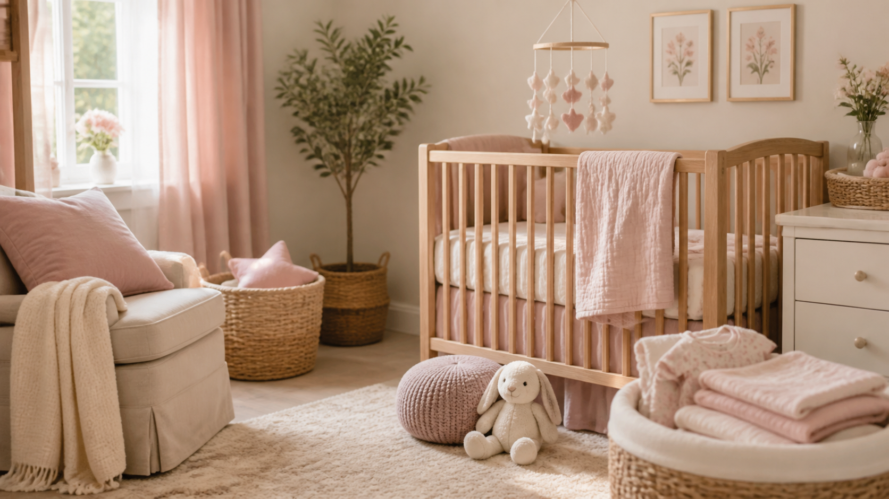
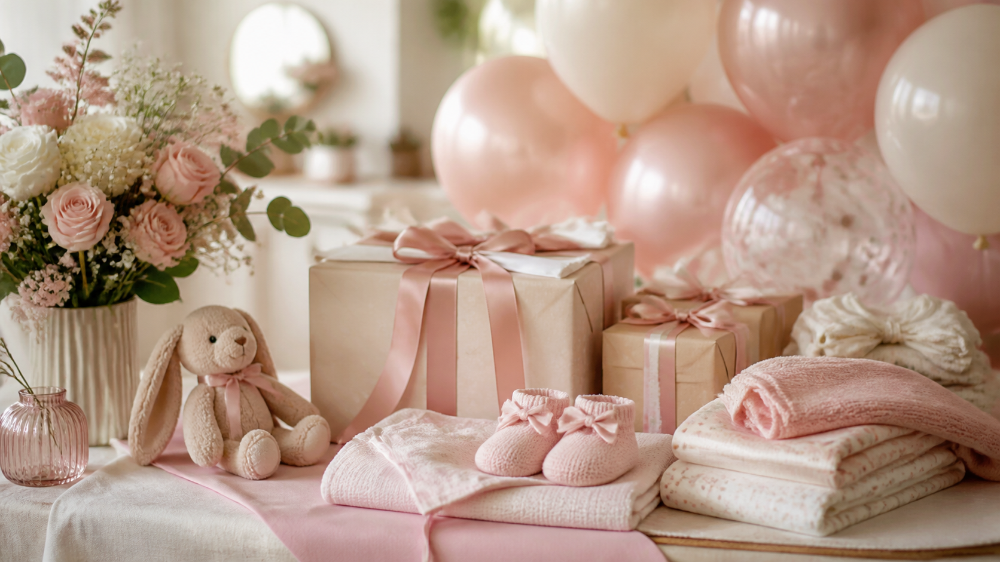
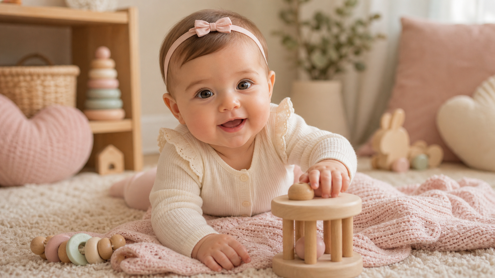
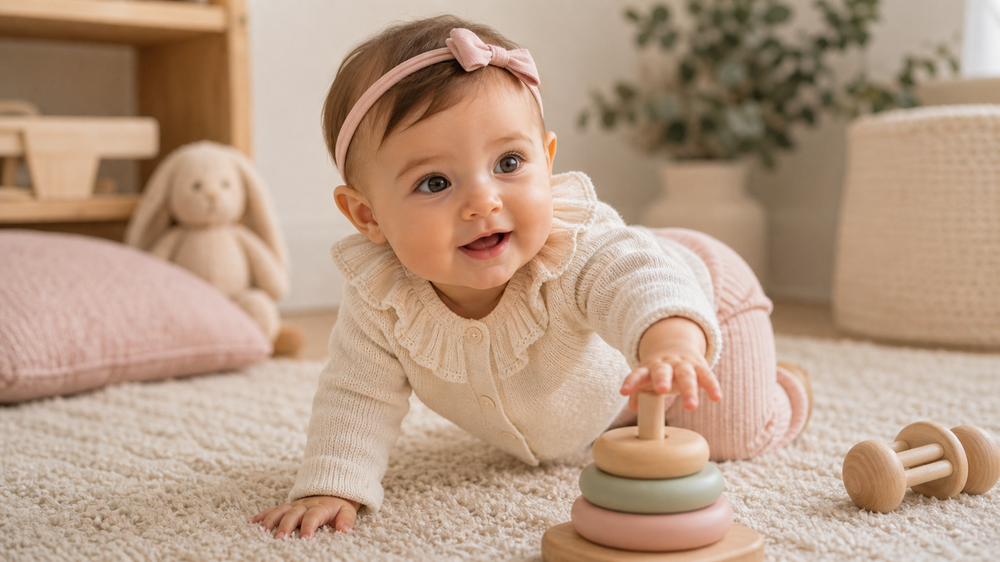
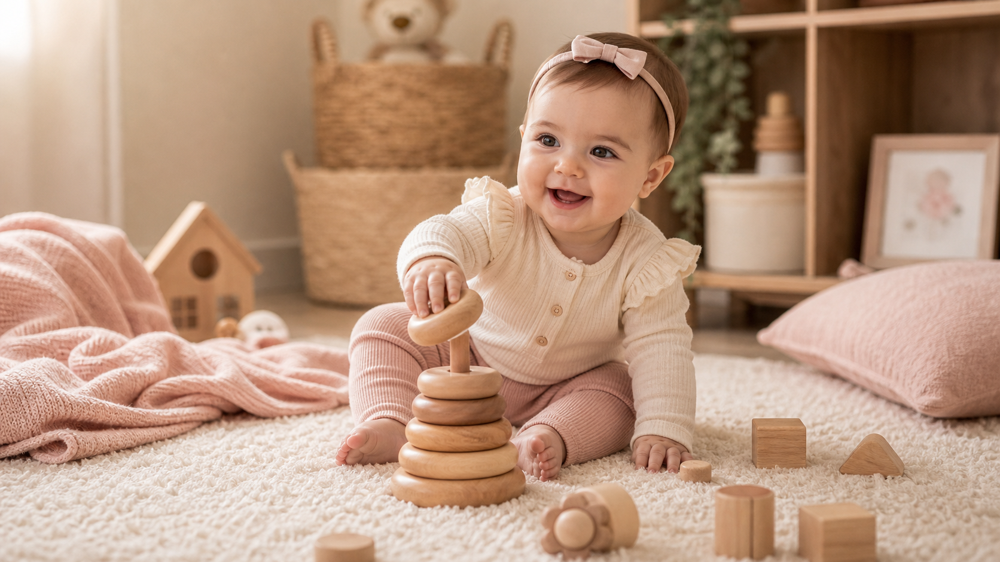
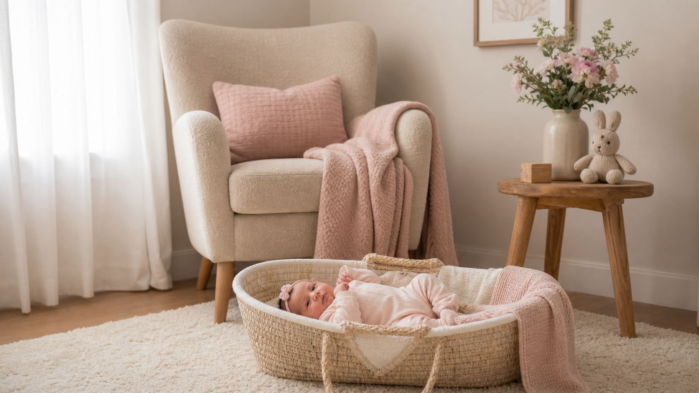
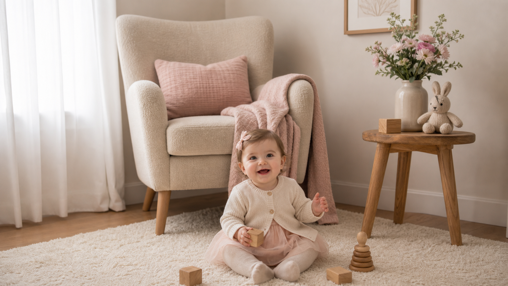
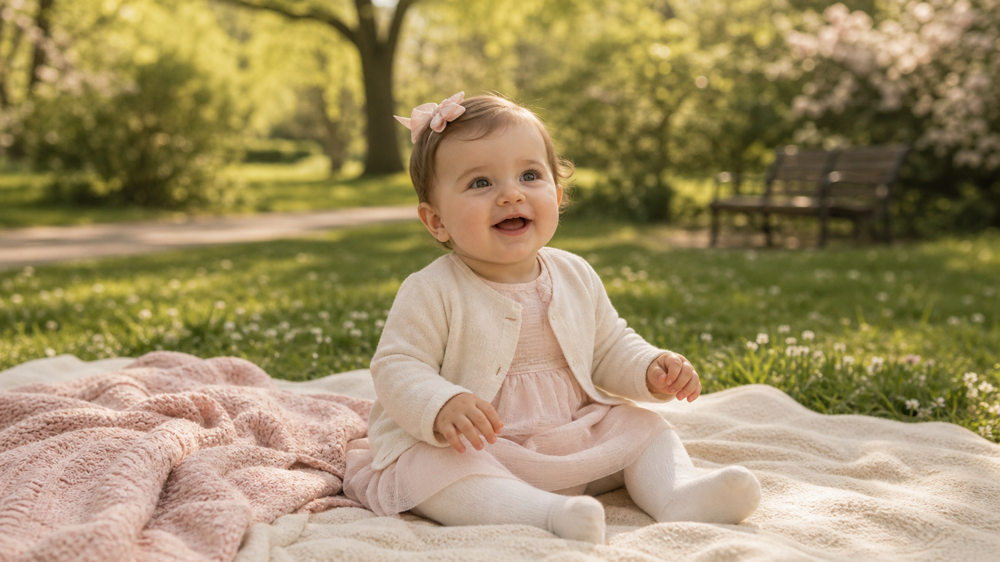
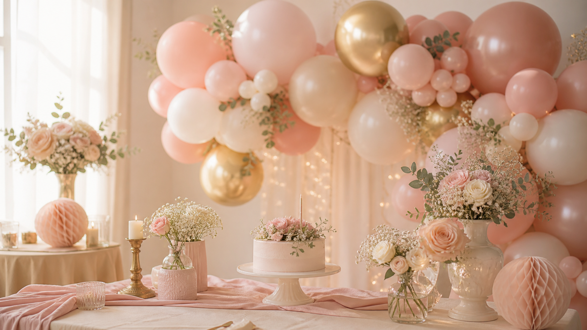

01
Descubriendo que venías
El test, la emoción, las llamadas a la familia y esa primera noche imaginando cómo serías.
Esta es mi historia: los meses de espera, mi llegada, mis primeras veces y todos esos recuerdos pequeños que mi familia quiere guardar para siempre.
Un álbum hecho con calma para recordar cómo empezó todo.
Comenzar mi historiaTodo empezó con una noticia que cambió la forma de mirar el futuro. Desde ese día, cada detalle empezó a tener tu nombre.
El test, la emoción, las llamadas a la familia y esa primera noche imaginando cómo serías.
Tu primer latido hizo que todo pareciera real.

Ropita doblada, colores suaves y una habitación esperando tu llegada.
Fotos mensuales, compras pequeñas, el nombre elegido con calma y una familia que empezaba a hablarte antes de verte.

Tu primer llanto llenó la habitación y todo lo demás se volvió secundario.
Cada mes guarda fotos, vídeos, peso, altura, sueño, aprendizaje, una anécdota y un mensaje de mamá y papá.
Te dormías cuando mamá cantaba bajito.
Tu carcajada apareció una tarde y nos cambió el día.

Todo lo querías tocar, mirar y probar.

La alfombra del salón se convirtió en tu pequeño mundo.
Aplaudiste antes de soplar tu primera vela.
La voz que te calmaba antes de nacer y los brazos donde todo empezaba de nuevo.
Tus primeros paseos, tus canciones inventadas y las risas de cada tarde.
Brazos expertos, paciencia infinita y una alegría difícil de explicar.
Tu compañera silenciosa, siempre cerca de tu manta y de tus juguetes.

Jugando


Hospital: donde empezó todo.
Casa: tu primer refugio.
Primer parque: una tarde suave de primavera.
Guardería: el inicio de nuevas rutinas.
Hubo tarta, globos, regalos, familia y muchas fotos. Pero lo más bonito fue mirarte celebrar sin saber todavía todo lo que significaba ese día.

Cartas, vídeos, audios y fotos inéditas reunidas en un rincón que se abrirá más adelante.